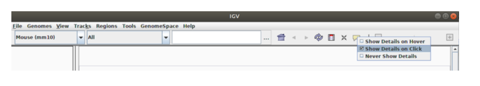
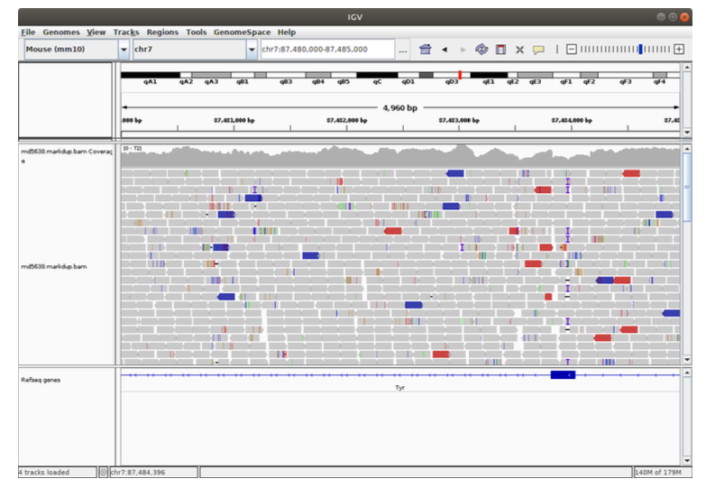
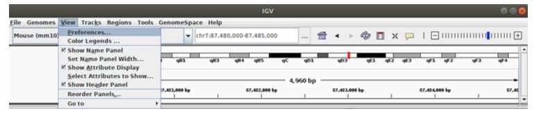
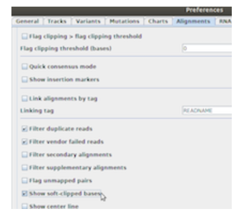

Exercises
Read Alignment
Introduction
Sequence alignment in NGS is the process of determining the most likely source of the observed DNA sequencing read within the reference genome sequence.

Why align?
There are typical inferences you can make from an alignment of NGS data against a reference genome:
• Variation from the reference – could have functional consequence.
• Transcript abundance: Instead of a microarray, you could use alignment to genome to quantify expression: more sensitive
• Ab-initio transcript discovery: you can see a pileup from RNA seq data showing evidence for an exon which was previously missed or an exon which is being skipped in a transcript.
 Tutorial sections
Tutorial sections
This tutorial comprises the following sections:
1. Performing read alignment
2. Alignment visualisation
There is also an additional (optional) section: 3. Alignment workflows
Running the commands from this tutorial
You can follow this tutorial by typing all the commands you see into a terminal window. This is similar to the “Command Prompt” window on MS Windows systems, which allows the user to type DOS commands to manage files.
To get started, open a new terminal on your computer and type the command below:
cd /home/manager/course_data/read_alignment Now you can follow the instructions in the tutorial from here.
Let’s get started!
This tutorial assumes that you have samtools, bwa, Picard tools and IGV installed on your computer.
These are already installed on the VM you are using. To check that these are installed, you can run the following commands:
samtools --help
bwa
picard -h
igv
This should return the help message for samtools, bwa and Picard tools respectively. The final command should launch the genome viewer IGV. You can close the IGV software, we will use it later in this tutorial to visualise alignments.
To get started with the tutorial, head to the first section: Performing read alignment
Performing Read Alignment
Here we will use the BWA aligner to align a smll set of Illumina sequencing data to the Mus Musculus reference genome. We will align genomic sequence (from Whole-Genome Sequencing) from a mouse embryo which has been mutagenised while the one-cell stage using CRISPR-Cas9 and a gRNA targeting an exon of the Tyr gene. The successful mutation of the gene will delete one or both alleles. A bi-allelic null Tyr mouse will be albino, but otherwise healthy.
First, check you are in the correct directory.
pwd
It should display something like:
/home/manager/course_data/read_alignment
Viewing the reference genome
Go to the ref directory that contains the fasta files of the reference genomes: cd ~/course_data/read_alignment/data/ref
Fasta files (.fa) are used to store raw sequencing information before aligning data. A single chromosome from the mouse genome is contained in the file GRCm38.68.dna.toplevel.chr7.fa.gz
View the file with zless (we use zless instead of less because the file is compressed):
zless GRCm38.68.dna.toplevel.chr7.fa.gz
Q1: What is the length of chromosome 7 of the mouse genome? (Hint: Look at the fasta header for chromosome 7)
................................................................................................
Similar to a BAM file, to allow fast retrieval of data, an index file is often required. You should check for the presence of fasta indexes for the genome in the ‘ref’ directory:
GRCm38.68.dna.toplevel.chr7.fa.gz.amb … GRCm38.68.dna.toplevel.chr7.fa.gz.sa
These are created by BWA: suffixtrees, bwt transform etc.
If these index files don’t exist, then you can run the indexing with the command
bwa index GRCm38.68.dna.toplevel.chr7.fa.gz
Beware – this indexing process can take 3-5 minutes so please only run it if the index files do not exist!
Align the data with bwa
Go to the ~/course_data/read_alignment/data/Exercise1/fastq/ directory - you can use this command:
cd ../Exercise1/fastq
Use the bwa mem command to align the fastq files to the mouse reference genome. By default bwa outputs SAM format directly to the standard output (in this case your terminal window), therefore you will have to redirect the result into a SAM file.
bwa mem ../../ref/GRCm38.68.dna.toplevel.chr7.fa.gz md5638a_7_87000000_R1.fastq.gz md5638a_7_87000000_R2.fastq.gz > md5638.sam
This may take a few minutes, please be patient.
Convert a SAM file to a BAM file
Now use samtools to convert the SAM file md5638.sam created in the previous step into a BAM file called md5638.bam.
samtools view -O BAM -o md5638.bam md5638.sam
Q2: How much space is saved by using a BAM file instead of a SAM file?
................................................................................................
Sort and index the BAM file
The BAM files produced by BWA are sorted by read name (same order as the original fastq files). However, most viewing and variant calling software require the BAM files to be sorted by reference coordinate position and indexed for rapid retrieval. Therefore, use ‘samtools sort’ to produce a new BAM file called md5638.sorted.bam that is sorted by position.
samtools sort -T temp -O bam -o md5638.sorted.bam md5638.bam
Finally index the sorted BAM file using ‘samtools index’ command.
Note: indexing a BAM file is also a good way to check that the BAM file has not been truncated (e.g. your disk becomes full when writing the BAM file). At the end of every BAM file, a special end of file (EOF) marker is written. The Samtools index command will first check for this and produce an error message if it is not found.
samtools index md5638.sorted.bam
Unix pipes to combine the commands together
To produce the sorted BAM file above we had to carry out several separate commands and produce intermediate files. The Unix pipe command allows you to feed the output of one command into the next command.
You can combine all of these commands together using unix pipes, and do all of this data processing together and avoid writing intermediate files. To do this type:
bwa mem ../../ref/GRCm38.68.dna.toplevel.chr7.fa.gz md5638a_7_87000000_R1.fastq..gz md5638a_7_87000000_R2.fastq.gz | samtools view -O BAM - | samtools sort -T temp -O bam -o md5638_2.sorted.bam -
Now index the BAM file:
samtools index md5638_2.sorted.bam
Note: When the symbol - is used above, Unix will automatically replace - with the output produced by the preceding command (i.e. the command before the | symbol).
Mark PCR Duplicates
We will use a program called ‘MarkDuplicates’ that is part of Picard tools (http://picard.source-forge.net) to remove PCR duplicates that may have been introduced during the library construction stage. To find the options for ‘MarkDuplicates’ – type:
picard MarkDuplicates
Now run MarkDuplicates using the ‘I=’ option to specify the input BAM file and the ‘O=’ option to specify the output file (e.g. md5638.markdup.bam). You will also need to specify the duplication metrics output file using ‘M=’ (e.g. md5638.markdup.metrics).
picard MarkDuplicates I=md5638.sorted.bam O=md5638.markdup.bam M=md5638.metrics.txt
Q3: From looking at the output metrics file - how many reads were marked as duplicates? What was the percent duplication?
................................................................................................
Don’t forget to generate an index for the new bam file using samtools.
samtools index md5638.markdup.bam
Generate QC Stats
Use samtools to collect some statistics and generate QC plots from the alignment in the BAM file from the previous step. Make sure you save the output of the stats command to a file (e.g. md5638.markdup.stats).
samtools stats md5638.markdup.bam > md5638.markdup.stats
plot-bamstats -p md5638_plot/ md5638.markdup.stats
Exercises
Now look at the output and answer the following questions:
Q4: What is the total number of reads?
Q5: What proportion of the reads were mapped?
Q6: How many reads were paired correctly/properly?
Q7: How many read pairs mapped to a different chromosome?
Q8: What is the insert size mean and standard deviation?
In your web browser open the file called md5638_plot.html to view the QC information and answer the following questions:
Q9: How many reads have zero mapping quality?
Q10: Which of the first fragments or second fragments are higher base quality on average?
Congratulations you have succesfully aligned some NGS data to a reference genome! Now continue to the next section of the tutorial: Alignment visualisation.
Alignment Visualisation
You have now made it to the interesting part!
Integrative Genome Viewer (IGV) http://www.broadinstitute.org/igv/ allows you to visualise genomic datasets and is a very useful tool for looking at the alignment of reads onto a reference genome from BAM files.
Start IGV by typing:
igv &
IGV main window
When you start IGV, it will open a main window. At the top of this window you have a toolbar and genome ruler for navigation. The largest area in the main window is the data viewer where your alignments, annotations and other data will be displayed. To do this, IGV uses horizontal rows called tracks. Finally, at the bottom, there is a sequence viewer which contains the base level information for your reference genome.

Load the reference genome
IGV provides several genomes which can be selected with the “Genome drop-down box” on the toolbar.
Go to ’ Genomes -> Load Genome From Server… ’ and select “Mouse mm10”. This is a synonym for GRCm38, which is the current mouse assembly (reference genome)


IGV toolbar and genome ruler
Once the genome has loaded, the chromosomes will be shown on the genome ruler with their names/numbers above. When a region is selected, a red box will appear. This represents the visible region of the genome.
Above the genome ruler is the toolbar which has a variety controls for navigating the genome:
Genome drop-down - load a genome
Chromosome drop-down - zoom to a chromosome
Search - zoom to a chromosome, locus or gene
There are several other buttons which can be used to control the visible portion of the genome.
Whole genome - zoom back out to whole genome view
Previous/next view - move backward/forward through views (like the back/forward buttons in a web browser)
Refresh - refresh the display
Zoom - zooms in (+) / out (-) on a chromosome

Sequence viewer
The sequence viewer shows the genome at the single nucleotide level. You won’t be able to see the sequence until you are zomed in. Let’s try it, select the zooom in (+) option in the top right of the screeen. As you start to zoom in (+), you will see that each nucleotide is represented by a coloured bar (red=T, yellow=G, blue=C and green=A). This makes it easier to spot repetitive regions in the genome. Carry on zooming in (+) and you will see the individual nucleotides.

3.3 Navigation in IGV
There are several views in IGV
Genome view
Chromosome view
Region view
There are several ways to to zoom in and out to these views to look at specific regions or base level information.
Whole genome view
To get a view of the entire genome select the zoom to whole genome icon (house icon) found in the toolbar at the top of the IGV window.

Chromosome view
To get a view of a specific chromosome select the chromosome from the chromosome drop down list in the toolbar of the IGV window.

Region view
Jump to region If you know the co-ordinates of the region you want to view, you can enter them into the “Search” and click “Go”. The format is chromosome:start-stop. For example, to view from 100,000 to 100,100 on chr7, you would enter chr7:100,000-100,100 in the search box. We will practice this later in an exercise.
Select region If you don’t know the specific co-ordinates of the region you want to look at, you can click and drag to select a region on the genome toolbar.

Note: the visible region of the chromosome is indicated by the red box on the genome ruler.
Zooming in and out
You can zoom in and out from each view by using the “+” and “-” buttons on the zoom control at the right-hand side of the toolbar. This will also work with the “+” and “-” keys on your keyboard.

Load the alignment
IGV can be used to visualise many different types of data, including read alignments. Each time you load an alignment file it will be added to the data viewer as a new major track.
Go to ’ File -> Load from File… ‘. Select the “md5638.markdup.bam” BAM file that you created in the previous section and click’ Open ’.
Note: BAM files and their corresponding index files must be in the same directory for IGV to load them properly.


Visualising alignments
For each read alignment, a major track will appear containing two minor tracks for that sample:
coverage information
read alignments
For the total number of visible tracks, see the bottom left of main window.
At the genome level view, there will be no coverage plot or read alignments visible. At the chromosome level view, there are two messages displayed: Zoom in to see coverage/alignments. Finally, once you have zoomed in (+) you will see a density plot in the coverage track and your read alignments.

Coverage information
When zoomed in to view a region, you can get alignment information for each position in the genome by hovering over the coverage track. This will open a yellow box which tells you the total number of reads mapped at that position, a breakdown of the mapped nucleotide frequencies and the number of reads mapping in a forward/reverse orientation. In the example shown below, 95 reads mapped, 50 forward and 45 reverse, all of which called A at position 202,768 on chromosome PccAS_05_v3.
This is just an example for illustrative purposes, please do not try to look at this position in IGV here.

Viewing individual read alignment information
Read are represented by grey or transparent/white bars which are stacked together where they align to the reference genome. Reads are pointed to indicate the orientation in which they mapped i.e. on the forward or reverse strand. Hovering over an individual read will display information about its alignment.
(images/igv-read-information.png “IGV - read information”)
Mismatches occur where the nucleotide in the aligned read is not the same as the nucleotide in that position on the reference genome. A mismatch is indicated by a coloured bar at the relevant position on the read. The colour of the bar represents the mismatched base in the read (red=T, yellow=G, blue=C and green=A).
IGV configuration
Follow the instructions that follow to set up your IGV view:
Select the little yellow “speech bubble” icon in the toolbar and set the option to “Show Details on Click” (or you will go mad, I promise!).

Zoom in so you can see sequence reads and go to region chr7:87480000-87485000 using the navigation bar at the top.

Control-click or right-click in the data view window. Choose sort alignments by insert size, then choose colour alignments by insert size and finally choose “View as pairs”.
Go to ’ View -> Preferences… ’ select the ’ Alignments ’ tab and ensure the “Show soft-clipped bases” option is ticked. This colour highlighting emphasises soft-clips on the read itself.


Your IGV session should look similar to:
3.7 Exercises
Go to chromosome chr7, positions 87,483,625-87,484,330 using the navigation bar across the top. Take in the glorious view of a genome pileup. Stop and smell the roses! Click on stuff!
Scroll around, zoom in and out a bit!
2. Go back to chromosome 7:87,483,625-87,484,330. What is the (rough) coverage across this region? (Hint: Look at the coverage track)
Can you spot the three mutant variants (two small and one larger) in this region? State what the evidence is for them?
Hints
• Hint1: Look around 87,483,960 for an insertion. How large is it? How many reads does it occur in?
• Hint2: Look around 87,483,960 for a deletion. How large is it? How many reads does it occur in?
• Hint3: Zoom out slightly and watch the coverage track between 87,483,700 - 87,484,200.
Once you’ve spotted the large change look at reference sequence the edges of the mutation to hazard a guess as to its mechanism.
4. Can you venture a guess as to what happened here? Why are these mutations present?
Congratulations you have completed the Read Alignment tutorial. If you have time left then continue to the next (optional) section of the tutorial: Alignment workflows.
Here is an additional IGV tutorial and refresher: https://github.com/sanger-pathogens/pathogen-informatics-training/blob/master/Notebooks/IGV/IGV.pdf. You can find a copy of this tutorial in your manual. Unfortunately, there is not enough time to complete this tutorial now but you may find it useful to look at it after the course.
NGS Workflows
A typical NGS experiment involves more than one sample, potential 10’s or 100’s of samples. During the experiment, a sample may be split across multiple libraries and and a library may be split across multiple sequencing runs (lanes). For example, you may have to increase the number of runs for a specific sample to increase the read-depth (sequencing volume), so you have to prepare multiple libraries.
Therefore you need a coordinated workflow, driven by standard software to bring it reliably together.
Read alignment is just the first part of that. Once you have a BAM file for each sequencing run you need to merge them together to produce a BAM file for the library. At this stage it is important to perform de-duplication on the merged data. The main purpose of removing duplicates is to mitigate the effects of PCR amplification bias introduced during library construction. PCR duplicates erroneously inflate the coverage and, if not removed, can give the illusion of high confidence when it is not really there which can have an effect on downstream analysis such as variant calling.
The figure below outlines a typical NGS workflow:
 In this part of the tutotial, we have two lanes of illumina sequencing data produced from a single library of yeast. We will use the BWA aligner to align the data to the Saccromyces cerevisiae genome (ftp://ftp.ensembl.org/pub/current_fasta/saccharomyces_cerevisiae/dna/) and produce a merged BAM file for the library.
In this part of the tutotial, we have two lanes of illumina sequencing data produced from a single library of yeast. We will use the BWA aligner to align the data to the Saccromyces cerevisiae genome (ftp://ftp.ensembl.org/pub/current_fasta/saccharomyces_cerevisiae/dna/) and produce a merged BAM file for the library.
To begin go to the following directory:
cd /home/manager/course_data/read_alignment/data/Exercise2/60A_Sc_DBVPG6044/library1
Index the reference
bwa index ../../../../ref/Saccharomyces_cerevisiae.R64-1-1.dna.toplevel.fa.gz
Align the first sequencing run
Recall that to align a lane of data to a reference genome we must perform the following steps:
• Align the data
• Convert from SAM to BAM
• Sort the BAM file
• Index the sorted BAM file
Find the data
Go to the directory that contains the data for the first sequencing run:
cd lane1
Run the alignment
Remember from earlier in the tutorial that the Unix pipe command allows you to feed the output of one command into the next command. So using Unix pipes, we can combine all of the alignment steps together into one command and do all of this data processing together and avoid writingintermediate files. To do this type the command:
bwa mem -M -R '@RG\tID:lane1\tSM:60A_Sc_DBVPG6044' ../../../../ref/Saccharomyces_cerevisiae.R64-1-1.dna.toplevel.fa.gz s_7_1.fastq.gz s_7_2. fastq.gz | samtools view -bS - | samtools sort -T temp -O bam -o lane1.sorted.bam -
Q1: What do the -M and -R options do?
Q2: What does the -bS option do?
Now index the BAM file:
samtools index lane1.sorted.bam
Generate QC stats
Now use samtools to collect some statistics and generate QC plots from the alignment in the BAM file. Type the commands:
samtools stats lane1.sorted.bam > lane1.stats.txt
plot-bamstats -p plot/ lane1.stats.txt
Now look at the output and answer the following questions:
Q3: What is the total number of reads?
Q4: What proportion of the reads were mapped?
Q5: How many reads were paired correctly/properly?
Q6: How many reads mapped to a different chromosome?
Q7: What is the insert size mean and standard deviation?
In a web browser open the file called plots.html to view the QC information.
Q8: How many reads have zero mapping quality?
Q9: Which of the first fragments or second fragments are higher base quality on average?
Align the second sequencing run
There is a second lane of sequencing data in the library1 directory contained in the directory lane2. We want to also align this sequncing data and produce a BAM file.
Go to the directory that contains the data for the second sequencing run:
cd ../lane2
Now align the data in this directory to the yeast reference genome and produce a sorted BAM file.
Note: This time when you use the bwa mem command use the following header option to specify lane2 as the read group ID:
@RG\tID:lane2\tSM:60A_Sc_DBVPG6044
Q10: What is the size of the BAM file that is produced?
Merge the BAM files
Go to the directory that contains the data for the library 60A_Sc_DBVPG6044/library1 . Use ls to get a listing of the files and directories contained in this directory.
cd ..
pwd
ls
You will notice that there are two directories called lane1 and lane2. There were two sequencing lanes produced from this sequencing library. In order to mark library PCR duplicates, we need to merge the two lane BAM files together to produce a single BAM file. We will use the picard tool called ‘MergeSamFiles’ (http://picard.sourceforge.net) to merge the lane BAM files.
To find the options for ‘MergeSamFiles’ command, type:
picard MergeSamFiles
Now use the I= option to specify both the input BAM files and the O= option to specify the outputfile (e.g. library1.bam). Note: Multiple input files can be specified using multiple I= options
Mark PCR duplicates
We will use a program called ‘MarkDuplicates’ that is part of Picard tools (http://picard.source-forge.net) to remove PCR duplicates that may have been introduced during the library construction stage. To find the options for ‘MarkDuplicates’ type:
picard MarkDuplicates
Now use the I= option to specify the input BAM file and the O= option to specify the output file (e.g. library1.markdup.bam). You will also need to specify the duplication metrics output file using
M= (e.g. library1.markdup.metrics).
**Don’t forget to index your final bam file using samtools index.
Q11: From looking at the output metrics file - how many reads were marked as duplicates?
Q12: What was the percent duplication?
Visualise the alignment
Go to the directory containing the reference genome and uncompress the file as IGV cannot read a compressed file.
cd /home/manager/course_data/read_alignment/data/ref
gunzip Saccharomyces_cerevisiae.R64-1-1.dna.toplevel.fa.gz
Start IGV by typing:
igv &
Load the reference genome
On the top menu bar go to ’ Genomes –> Load Genome From File… ‘, go to the “ref” directory and select the file “Saccharomyces_cerevisiae.R64-1-1.dna.toplevel.fa” and click’ Open ’


Load the alignment
To load the merged BAM file, on the top menu bar go to ’File –> Load from File…’ and select the library BAM file that you created in the previous step.


Exercises
1. Go to Chromosome IV and position 764,292. (Hint: use the navigation bar across the top)
2. What is the reference base at this position?
3. Do the reads agree with the reference base?
4. What about the adjacent position (IV:764,293)? What is the reference base at this position? Is it supported by the reads?
5. Go to Chromosome IV and position 766,589.
6. What sort of mutation are the alignments indicating might be present?
7. Go to Chromosome IV and position 770,137 using the navigation bar across the top.
8. What sort of mutation are the alignments indicating might be present? Is there anything in the flanking sequence of the reference genome that might make you suspicious about this mutation?
9. Convert the BAM file to a CRAM file
You have reached the end of the Read Alignment tutorial.